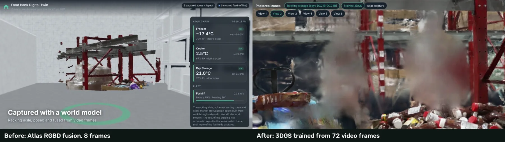
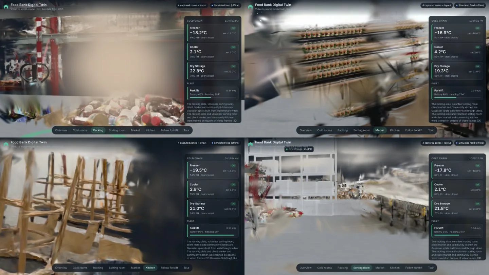
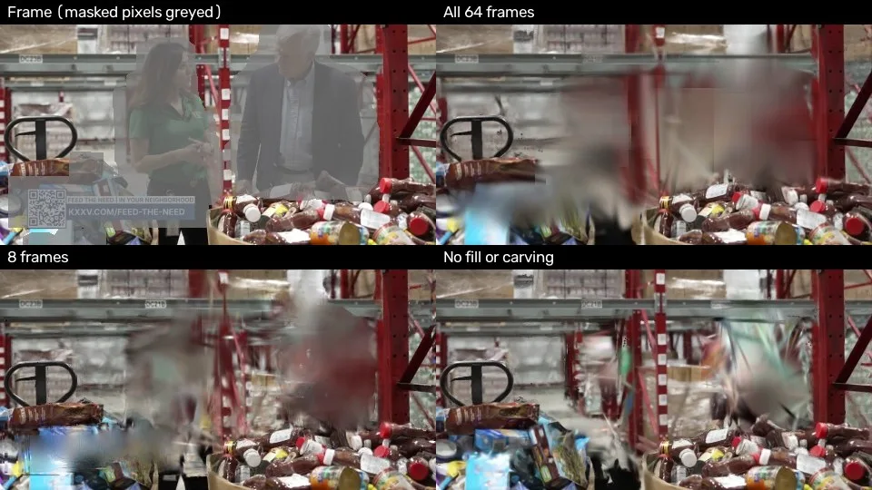
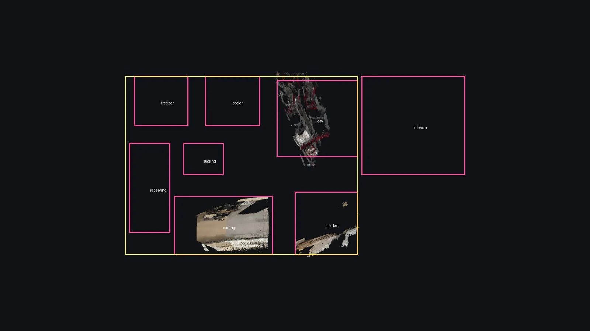
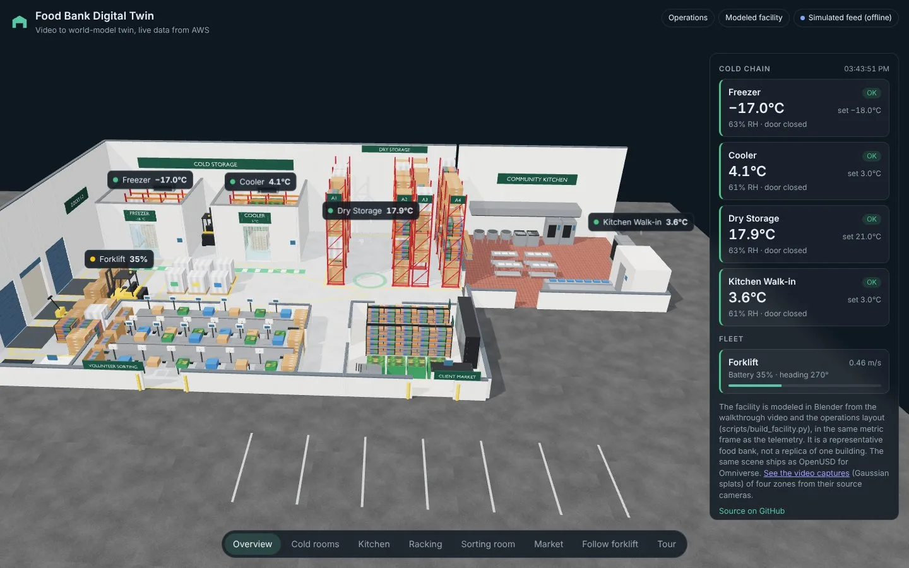

从视频到数字孪生：世界模型与高斯溅射在真实新闻走访视频上的探索性研究
From Video to Digital Twin: An Exploratory Study of World Models and Gaussian Splatting on In-the-Wild Video
结论是“看见的部分便宜且可米制化，没看见的部分仍未解决”。20 帧、200 credits 换来 747k splats 与 48.5 MB USDZ；本地 3DGS 在 64/43 帧时 21.16/23.10 dB，8 帧降到 17.34/17.69 dB；去掉背景补全与外壳剔除升到 23.64 dB（两个场景），但被掩码区域没有真值。世界模型生成步骤两次失败，外推未评估。
cost
splats
PSNR
delta
作者、单位与技术谱系 · Research context
作者与单位
研究脉络
- 3D Gaussian Splatting（Kerbl et al., 2023）方法基座关系：提供可实时渲染的各向异性高斯表示与可微光栅化目标，本篇的本地训练器按该目标重写为纯 PyTorch CPU 版本。[原文引用/说明]
- World Labs Marble 2 开发者 API直接依赖关系：images2PosedRGBD 提供位姿与米制深度，atlasGenerate 承担未观测视角生成，fuse 在本地完成。[原文引用/说明]
- OpenUSD 26.03 ParticleField3DGaussianSplat输出标准关系：让 splat 从查看器私有格式变成可与传感器、设备、标注共存的场景层，是本篇“数字孪生”成立的前提。[原文引用/说明]
单作者、无机构署名，未发现公开合作边；下列三条是技术依赖与工具使用，不是合作关系。作者在致谢中说明使用 Claude 辅助编写与测试管线、起草稿件，并对内容负责。
方法本质拆解 · What actually changed
是不是微调？
不是。世界模型侧只做 API 前向调用，权重不变；本地 3DGS 是从零优化的 PyTorch 实现，每个区域 3000 步（文档配置 6000 步），学习的是高斯位置、协方差、透明度与 SH 系数。唯一“预训练”成分是 DeepLab v3 人物分割与 COLMAP SfM，它们不参与可微优化。
加了什么约束？
人物与台标掩码把动态像素排除在光度损失之外；掩码下用 0.3 权重的背景 plate 监督；每 250 步按多帧可见性剔除落在人体视觉外壳内的高斯；导出时用固定 1.6 m 相机高度补尺度。USD 侧再用 Rx(180)、地面偏移与米制缩放把世界模型坐标系锚到 Y-up。
推理/后端做了什么？
世界模型路线是 pose→fuse→USD：逐帧反投影、1 cm 体素最高置信度保留、写 SPZ/USDZ；本地路线是 COLMAP 位姿→3DGS 光栅化。两者都没有全局 bundle adjustment（COLMAP 内部 BA 除外），也没有测试时优化或跨区域位姿精化，区域之间靠手工平面布局拼接。
方法本质是什么？
用少量帧的世界模型米制深度把每个局部片段锚到物理尺度，用掩码与背景 plate 处理随镜头移动的人，再用留出帧把“观测区保真”和“未观测区填充”分开计量。它改变的是几何来源与评测口径，不是渲染算子；没有做的是跨区域联合优化与真正的生成式外推。
输入公开走访视频与逐帧人物掩码 → 在世界模型给出的位姿/米制深度上做体素融合 → 用 USD 层区分捕获与设计内容 → 观测区 21–23 dB，未观测区仍靠脚本模型。

结论与问题Conclusion & Motivation
核心结论
今天的世界模型能从一段未经整理的公开视频里恢复“相机看过的地方”：20 帧输入换来三个区域的相机位姿、逐像素米制深度与约 74.7 万个高斯，总成本 200 credits（0.20 美元），并且可以被组织成合法的米制 OpenUSD 场景。但相机没看过的地方并没有被补出来——两次生成新视角的请求都在服务商侧失败，建筑外壳最终由 Blender 脚本补建，作者明确说“地图是画的，照片是拍的”。本地训练的 3DGS 在拍摄路径附近明显更真实，却需要 43–72 帧，压到 8 帧后留出 PSNR 下降 3.8–5.4 dB。因此这篇论文的价值不在一个新模型，而在把“少帧世界模型”和“多帧局部重建”的分工、成本与失败边界量化出来。
动机与问题
工业数字孪生的几何通常来自地面激光扫描、摄影测量或手工 CAD，对汽车工厂可以接受，但对靠非营利预算运转的食品银行过于昂贵。神经渲染与 3DGS 降低了采集门槛，却只能重建被观测到的部分；生成式世界模型声称能从少量视角补全未观测空间，这对稀疏走访视频很有吸引力，但也可能“发明几何”。论文因此问三个问题：未经整理的公开视频能被恢复到哪里；生成步骤能否补上相机没看到的空间；把结果变成开放场景格式需要哪些修正。案例选的是德州食品银行的新闻走访视频，人物几乎出现在每个镜头，属于典型的 in-the-wild 输入。
方法Method
方法总览
流程分三步，彼此只通过两个契约交换数据：重建步骤发布 OpenUSD stage（含 SPZ 与 metadata），数据步骤发布同一米制坐标系下的 JSON。重建侧先做模糊感知抽帧（最多 40 帧），再调用 World Labs 的 Marble 2 开发者 API：images2PosedRGBD 返回每帧位姿、米制深度与置信度，atlasGenerate 负责生成新视角（本篇两次均失败），本地 fuse 阶段按 1 cm 体素保留最高置信度样本并写成 SH0 的各向同性高斯。为了区分“世界模型贡献”与“3DGS 贡献”，作者又用 COLMAP SfM 加自写 CPU 3DGS 训练了四个区域，并用背景 plate 与视觉外壳剔除处理随镜头移动的主持人。最后把 splat 转成 ParticleField3DGaussianSplat，接入 AWS 无服务器遥测、浏览器与 Omniverse。
关键技术细节
世界模型的 pose 阶段按 10 credits/帧计费，generate 阶段按 50 credits/视角计费，fuse 阶段免费；融合时每个 1 cm 体素只保留置信度最高的样本，掩码像素直接丢弃，输出 degree-0 球谐的各向同性高斯。USD 转换有四个坑：世界模型用 OpenCV 式 Y-down 相机系，需要 M=Rx(180°)·T(0,−o,0)·S(s) 才能落到 Y-up、米制、地面 y=0；带类型的 Xform 引用会覆盖 splat prim 的 schema，所以必须用 untyped prim 承载引用；转换器直接输出的 USDZ 是 ASCII 且没有 64 字节对齐，需先转 binary .usdc 再用 UsdUtils 打包；SPZ 是量化压缩，USDZ 存 32 位浮点，体积会涨 7.7–8.5 倍。本地训练侧用 L1+0.2 D-SSIM，掩码下背景 plate 权重 0.3，每 250 步按“中心落在超过一半可见帧的人物掩码内”剔除高斯，并用“相机高于地面 1.6 m”补上 SfM 缺失的尺度。

实验Experiments
实验设置
输入是一条 18 分 32 秒、1920×1080、59.94 fps 的公开新闻走访视频，两个主持人几乎全程在画面内，底部还有烧录字幕条。作者手工挑了三个区域：货架通道 8 帧、志愿者分拣室 6 帧、客户超市 6 帧，共 20 帧；帧按视角覆盖和无人物优先选择，自动 Laplacian 清晰度排序反而选中六张几乎一样的主持人特写。留出评测在货架通道与超市做：每 8 帧留 1 帧（9/73 与 6/49），只用未被人物掩码覆盖的像素计分（约 52% 与 55%），指标为 PSNR、SSIM、LPIPS。每个配置训练 3000 步、480 px 宽、4 个 CPU 核，对照是完整 trainer、只用 8 帧、以及去掉背景补全与外壳剔除的消融；完整 trainer 另跑第二个随机种子。
实验数字与比较
货架通道完整 trainer 为 21.16 dB / 0.799 SSIM / 0.094 LPIPS（64 帧训练、9 帧测试），8 帧版本降到 17.34 / 0.632 / 0.144，去掉背景补全与外壳剔除则升到 23.64 / 0.893 / 0.041；客户超市对应为 23.10 / 0.815 / 0.127、17.69 / 0.660 / 0.161、23.64 / 0.837 / 0.101。也就是说，帧数从 43–64 压到 8 会损失 3.8 dB（货架）与 5.4 dB（超市），而“清理人物背后”让留出 PSNR 反而高 2.5 dB 与 0.5 dB。世界模型侧三个区域分别得到 270,423、约 282,000、约 195,000 个高斯，合计约 747,000；货架区 SPZ 2.1 MB、USDZ 17.5 MB，整个站点 48.5 MB。第二个种子的 PSNR 只变化 0.13 dB（货架）与 0.05 dB（超市），远小于帧数与消融的差异。
消融/失败边界
最重要的消融是“去掉背景补全与视觉外壳剔除”：肉眼上人物背后会从柔和模糊变成条纹与暗碎片，但留出 PSNR 在两个场景都更高，因为被掩码的区域本来就不计分，指标只反映了“用合成背景板训练”和“删掉被少数帧放进人体轮廓的高斯”在观测像素上的代价。这个结果提醒我们：如果评测掩掉动态物体，就不能用同一指标宣称清理模块有效。第二个失败边界是生成步骤——两次 atlasGenerate 请求都返回 EXECUTION_FAILED（一次所有目标相机落在同一中心，一次摊在 0.6 m 圆环上），所以“外推未观测空间”这件事根本没有被评估，建筑其余部分由脚本模型补建。第三，8 帧基线其实偏乐观：它的相机位姿与初始点来自包含留出帧的全序列 SfM。第四，货架区地面几乎不可见，地面被放在相机下方 1.5 m 的固定位置。
局限与迁移Limitations & Transfer
局限与待核验
作者明确承认：这只是单案例，20 帧只覆盖三个区域，生成步骤失败导致整栋建筑是设计模型而非重建；尺度来自世界模型的米制估计，没有和任何已知尺寸核对；世界模型捕获没有保存相机位姿，因此无法在同一留出帧上评分，二者的比较只能靠 8 帧本地基线和肉眼；所有数值都是单次测量，除第二个种子外没有重复；CPU 训练只跑 3000 步、480 px，是文档配置的一半。我们还需要核验：0.4 m 的横梁高度推断是否真的对应 1.9 m 层高；世界模型失败请求是否计费；把 VGGT/DUSt3R 换进同一 8 帧协议后是否也能给出可比的米制深度；以及 USDZ 8.5 倍膨胀在更大场景下是否仍可接受。
与你研究路线的关系
可直接迁移的是三件事：把世界模型的米制深度当作稀疏视角建图的尺度先验；把“留出帧 + 只算未掩码像素”的协议固定下来，避免动态物体清理模块在不可测区域自证；以及在 USD/地图层显式标记“捕获”与“生成/设计”内容，防止下游把生成几何当测量。下一步实验建议用我们自己的户外多相机数据做一次严格对照：同一组 8 帧分别走 Marble、VGGT 与 COLMAP+3DGS，用完全相同的留出帧和掩码评分，并额外报告“生成区域占比”。如果世界模型的深度只在近景可信，就应该只把它当初始化，而不是当度量真值。







